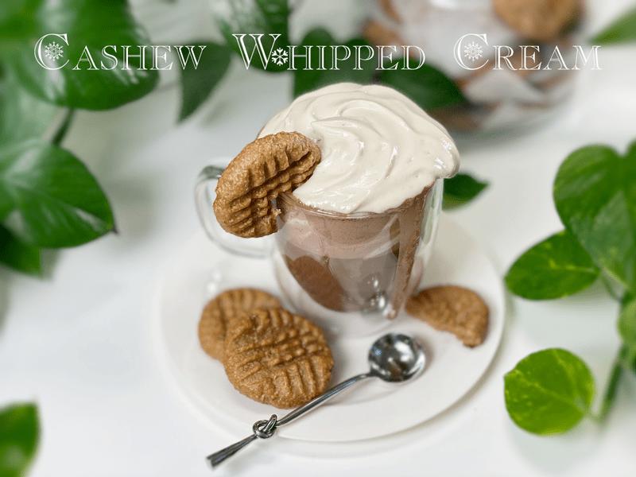
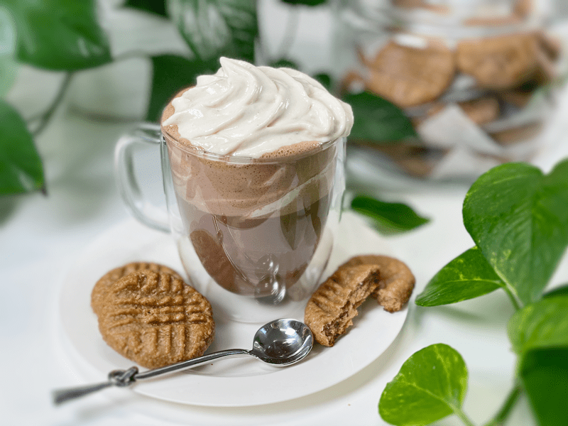
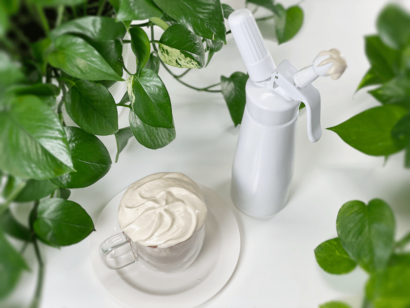

Cashew Whipped Cream | Using ISI Canister
I have owned an ISI dispenser for almost 10 YEARS (brand-new, in the box) but can you believe that it’s only been within the past few years that I have even begun to tinker with it? How can that be? How could I neglect a kitchen gadget?!! I need to be admitted to the “kitchen asylum” and rethink my dedication to culinary arts.

“Sophisticated” Cashew WHIPPED Cream
For many, straight up cashew cream is “been there, done that.” It’s one of the first things we learn to make in the raw food world. Maybe you’re new to the raw food mainstream, though, and you haven’t made it yet. I started thinking about how best to inspire you, because that’s why I’m here . . . and that’s when my creative light bulb came on! I decided I’d better learn to use my ISI whipper-upper-thing-a-ma-jig. It took several tries to get this recipe right. It’s not that the previous experiments were bad… they were downright tasty, but they didn’t have the “body” that I was looking for in whipped cream.

Whip It Good!
Click (here) for a sneak peek into what I hear in my head as I share this recipe with you. Haha So, why does a person need or want one of these gizmos? They’re fun–do you need another reason? But seriously, you can create a fluffy cashew cream that pairs beautifully with any raw or cooked dessert.
Tips and Techniques
- This whipped cream is thicker than what you might be used to that comes from a can. It is rich and velvety smooth.
- You’ll want to enjoy the whipped cream immediately, so if you are serving pie or hot chocolate, spray a dollop on top when you go to serve it.
- When blending the mixture, keep going until it is ultra-smooth. I can’t stress this enough. You don’t want to detect any grit in the mixture before it goes into the canister, since small particles could clog the spray nozzle.
- Once you charge the canister, put some upbeat music on and shake that thing! You will also want to shake it in between each use. This type of cashew cream can’t be store in the fridge for later, due to the coconut oil which will firm up, making it hard to use.
- It’s important to hold the canister vertically upside down when spraying the cream out. Slowly and gently pull the trigger so it doesn’t shoot out a burst of air.

Where Can I Get One of These?
You can order through my online Amazon store by clicking the following link: ISI Gourmet Whip Plus canister. Don’t forget to order the Cream Whipper Chargers; they are required. You can also check your local kitchen/department stores as well as the second-hand stores. I found a second one, brand new in the box, for $5. Enjoy and let me know how it goes! Oooh, I should let you know that I did try using blended fresh young thai coconut meat instead of cashews, but it didn’t work. It came out runny and almost looked as though it had separated in the canister.
This whipped cream can be used in so many ways, but one of my all-time favorite ways is on top of a mug of warm hot chocolate. It is rich, creamy, and delicious. I hope you enjoy the recipe and have a blessed day, amie sue
 Ingredients:
Ingredients:
Yields 2 1/4 cups
- 1 cup raw cashews, soaked 2+ hours
- 1/4 cup maple syrup
- 1/2 tsp vanilla extract
- 1/2 cup+2 Tbsp water
- 6 Tbsp coconut oil, melted
- 1 Tbsp sunflower liquid lecithin
- pinch of Himalayan pink salt
Preparation:
- Place the cashews in a bowl and cover with 3 cups of water.
- Cashews will swell as they absorb water during the soak time, so you need enough water to keep them covered.
- Soaking cuts down on the phytic acid, which will help with digestion.
- Soaking also softens the cashew, so they blend nice and creamy.
- After the cashews are done soaking, drain, and discard the soak water.
- In the blender, combine the cashews, sweetener, vanilla, water, coconut oil, lecithin, and salt.
- Starting with the blender on low, work up to high.
- Depending on the machine you have, this may take anywhere from 1-3 minutes.
- Rub a little bit of the cream between your fingers. If you feel any grit, keep blending, until silky smooth.
- Pour the cream into the ISI canister. Screw the lid on and change with one cartridge.
- Shake vigorously and enjoy!
- Shake with each use and keep the unit straight up and down as you GENTLY press the lever.
- For the first time use, always practice on a plate, so you get a feel for it. Don’t press the lever too fast or it will spurt out a lot of air, making a mess of your dessert.
- You’ll want to enjoy the whipped cream immediately, so if you are serving pie or hot chocolate, spray a dollop on top when you go to serve it.
© AmieSue.com